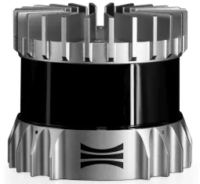
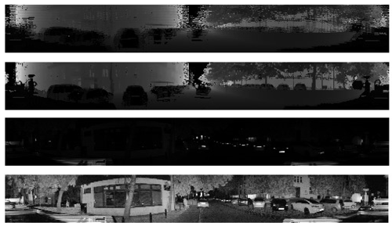

Thesis project

The goal of this thesis project was to design an algorithm that performs detection
of dangerous situations involving pedestrians on the road. For this problem, 3D point clouds acquired from a
vehicle-mounted LiDAR device (Ouster OS1-128) were used. The OS1-128 is a time-of-flight (ToF) sensor. This means
that it measures distance based on the time-of-flight of a light beam. The device emits light which bounces off
the measured object and returns to it. Using software provided by the Ouster manufacturer, the raw data was
converted to an array representation.

After converting point cloud to array representation, the result image was not natural.
If needed to be converted from stagger to destagger. Also it required scaling, because reflective objects and those
which emits light on their own, return signal incomparably large relative to other facilities.
When the data were transformed correctly, the next step was to create a dataset with annotated pedestrians.
To do that I used Roboflow. I have created dataset with about 1300 images, and after augmentation process increased
to about 3000 images.
To perform pedestrian detection in the images, I have decided to use a pre-trained YOLOv8 convolutional neural network, which
was retrained on the previously created dataset. After the model was ready to use, to perform object tracking I have
used a ByteTrack algorithm, which was provided by Ultralytics with default parameters values.
After